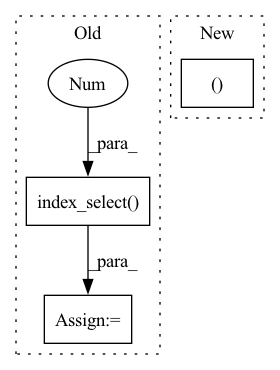

Pattern ID :29198
Before Change
out = out.view(num_embeddings * embedding_dim)
options = torch.tensor([1, -1], dtype=dtype, device=device)
hv = torch.index_select( options, 0 , selection, out=out)
hv.requires_grad = requires_grad
return hv.view(num_embeddings, embedding_dim)
After Change
select = torch.empty(
(
num_embeddings,
embedding_dim ,
),
dtype=torch.bool,
).bernoulli_(1.0 - sparsity, generator=generator)In pattern: SUPERPATTERN
Frequency: 3
Non-data size: 3
Instances Fragment ID: 85902124
Project Name: hyperdimensional-computing/torchhd
Commit Name: 846d0b5cfff5ddec678ab1f7c44ca2cc0e9296a6
Time: 2022-05-18
Author: mikeheddes@gmail.com
File Name: torchhd/functional.py
M Class Name: AnonimousClass
N Class Name: AnonimousClass
M Method Name: random_hv(0)
N Method Name: random_hv(0)
M Parent Class:
N Parent Class:
M File Name: torchhd/functional.py
N File Name: torchhd/functional.py
M Start Line: 110
M End Line: 125
N Start Line: 113
N End Line: 122
Before Change
for isample in range(input.shape[0]):
for ic in range(self.nconfs):
c = self.configs[ic]
mo = input[isample].index_select(0,c).index_select(1 ,c)
out[isample,ic] = torch.det(mo)
return out
class AOFunction(torch.autograd.Function):After Change
print(c)
print(input[isample])
mo = get_mo(input[isample,c ])
print(mo)
out[isample,ic] = torch.det(mo) Fragment ID: 85902122
Project Name: nlesc-jcer/qmctorch
Commit Name: a3b2285e8153b66f9b42395f24162fd8c6c82c76
Time: 2019-05-14
Author: nicolas.gm.renaud@gmail.com
File Name: pyCHAMP/wavefunction/neural_pyscf_wf_base.py
M Class Name: SlaterPooling
N Class Name: SlaterPooling
M Method Name: forward(2)
N Method Name: forward(2)
M Parent Class: nn.Module
N Parent Class: nn.Module
M File Name: pyCHAMP/wavefunction/neural_pyscf_wf_base.py
N File Name: pyCHAMP/wavefunction/neural_pyscf_wf_base.py
M Start Line: 230
M End Line: 231
N Start Line: 248
N End Line: 259
Before Change
if model_type == "cloth_model" or model_type == "deform_model":
relative_target_feature = (torch.index_select(input=target_feature, dim=0, index=senders) -
torch.index_select(input=target_feature, dim=0, index=receivers))
relative_mesh_pos = (torch.index_select( mesh_pos, 0 , senders) -
torch.index_select(mesh_pos, 0, receivers))
edge_features = torch.cat((
relative_target_feature,After Change
selected_nodes = find_influential_nodes.find_influential_nodes(target_feature, self._radius, self._topk)
reverse_selected_nodes = torch.flip(selected_nodes, [-1])
edges = torch.cat((torch.combinations(selected_nodes, with_replacement=True), torch.combinations(reverse_selected_nodes, with_replacement=True)), dim=0)
senders, receivers = torch.unbind(edges, dim=-1)
model_type = graph.model_type
if model_type == "cloth_model" or model_type == "deform_model": Fragment ID: 85902123
Project Name: wwmark/meshgraphnets
Commit Name: eed20dd8a346a7fc237279d136f08b426d5d27d4
Time: 2022-02-11
Author: ruoheng.ma@gmail.com
File Name: ripple_machine.py
M Class Name: RippleMachine
N Class Name: RippleMachine
M Method Name: add_meta_edges(4)
N Method Name: add_meta_edges(5)
M Parent Class:
N Parent Class:
M File Name: ripple_machine.py
N File Name: ripple_machine.py
M Start Line: 310
M End Line: 344
N Start Line: 282
N End Line: 311